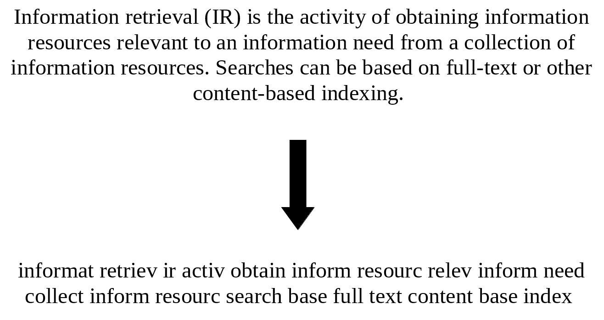

3. Indexing textual content
Contents
3. Indexing textual content¶
As we already saw in the previous chapter, indexing metadata is essential for a system to be able to respond to queries and identify documents relevant to this query. However, finding a document about a particular subject is another task altogether. This problem can still be solved with the use of metadata, but it requires archival work to associate each document to a defined list of subjects (like the UDC system presented in section 3.1.1). However, this has three major flaws. First, it is a huge amount of work to annotate every document in a collection, especially nowadays where the number of available documents has grown so much. Then, the annotation process is very subjective and could lead to disagreement between the archivist and the end-users. Finally, if a subject is added to the list of possible subjects, all the documents in the collection need to be re-evaluated towards this new subject. For these reasons, we need to be able to index the content of documents in an automatic way, as objectively as possible (we’ll see that it is not always easy, even with automatic methods).
In order to do that, we will index the textual content of the documents. This will allow users to make keyword searches and retrieve relevant documents. We could index the text as is but the system would not be able to find documents deemed relevant by the end-user. For example, a user querying for documents containing the word “universal” would not be able to find documents containing words like “universality”. This can be considered a feature if end-users want to be very precise with their search. However, there are a lot of use-cases where this would not be desirable and where the system should return more documents.
a. Pre-processing steps¶
To make the system able to find documents containing keywords and their potential variations, the texts of documents need to be processed to take into account those variations.
1. Dependency to language¶
A lot of steps inherent to the indexing process are language dependant. If the language of the documents to be indexed is knowned beforehand, it is just a matter of using the right algorithms. However, the language is not always known and it may be necessary in some cases to detect the language of documents before processing them. This can be done using various methods:
Detecting special characters only existing in a particular language (ß in German for example)
Presence/absence of functional words (‘the’ in English for example)
Statistical analyses of n-gram frequencies (some sequences of characters are much more likely to appear in a particular language, like “ing” for english)
Once the language of the document is detected, the text can be processed.
2. Tokenization¶
The text of a document can contain information on different levels of granularity: paragraphs, sentences, words, characters. If the most basic element is the character, it can’t really be associated to meaning. The smallest meaningful piece of a text is the word. However, the preffered term is token because it can include sequence of characters that are not really considered as a word but are still meaningful. For example the year 1945 is not a word per se but it definitely carries meaning and should be treated as such.
Tokenizing a text is not a simple problem. A first intuition is to use the space as a way to segment a text. However, some terms should not really be separated to conserve their meaning (for example it would make sense to treat “Los Angeles” as a single term). Also, how should the sequence of character they’re be segmented ? Moreover, some asian languages don’t even use a space to separate words. In some cases, language models can be used to try to understand how to separate terms from one another.
As you can see, some choices have to be made and it all depends on the final use-case. Most of the time however, a simple approach can be used: considering every sequence of alphanumeric characters as tokens.
3. Stop words¶
A stop word is basically a word that should be removed from a text because it does not carry much meaning. There does not exist a perfect list of words to exclude as it depends on the source materials and the use-case. Commonly, words removed are often short functional words like is, a, the, etc.
4. Stemming¶
Stemming is the act of transforming a word to a more basic form. This allows the system to match words with similar meaning even though they are written in different morphological forms. In this case, the stem of the word does not have to be a real word, its only purpose is to bring various forms into a single one.
There are different approach to transform a word into a stem. A simple way of doing it is to apply a set of transformation rules that can simplify a given word to a root form. For the English language, a commonly used method is the Porter algorithm. Without going into too much details, various sets of rules are applied in a sequential order. As an example, one transformation is to replace the “SSES” suffix into “SS” (caresses becomes caress), another is removing the suffixes “ed” or “ing”. If wou want more details on this algorithm, you can check this page.
b. How does all this impact search ?¶
The text processing steps described above are applied before indexing documents. Here is an example of a processed text.  In this example, the original text has been transformed to be indexed in a search system. The punctuation was removed, the text was lowercased, stop words were removed and the remaining tokens were stemmed. IT is important to configure the search system so that when a user makes a query, it is processed in the same way as the text was indexed. As we already saw, this process allows user to find possibly relevant documents even though the query does not match exactly the original text.
If this behaviour can help users to find more documents, it also means that more documents returned by the system won’t necessarily be of interest for the user. Some users would prefer to make precise queries to limit the number of returned documents by assuring that they exactly contains certain terms. A way of dealing with this issue is to index documents twice with different parameters. In the user interface of a search system, the user must be able to choose between an exact search or a classic search. Here the word classic refers to searching through documents that have been processed in the way explained above.
Thus, a user trying to find documents containing a phrase like “to be or not to be” would be able to do so by doing an exact search, where stop words are not removed. With a classic search, the same query would actually be transformed into an empty one, making it impossible to find relevant documents.